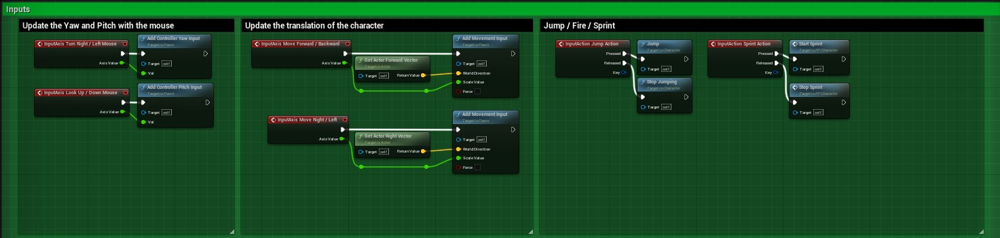
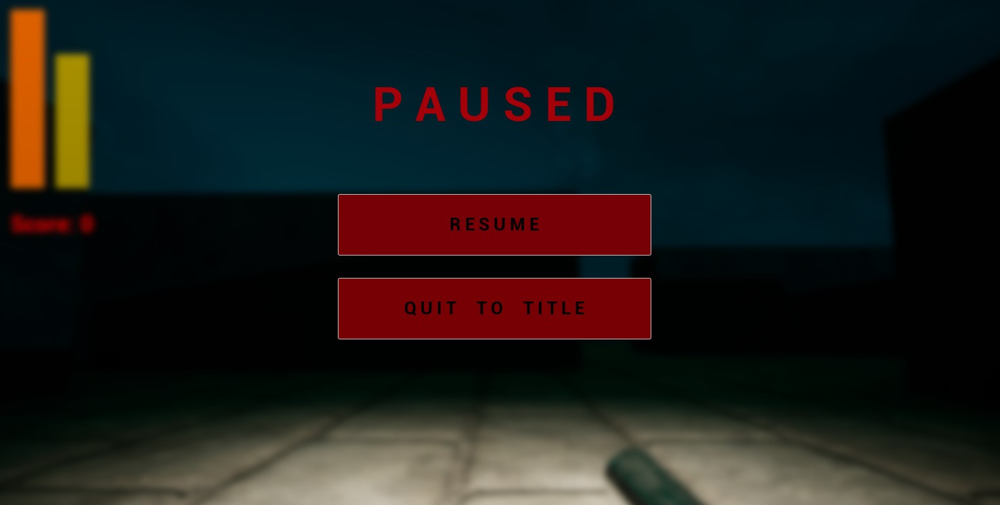
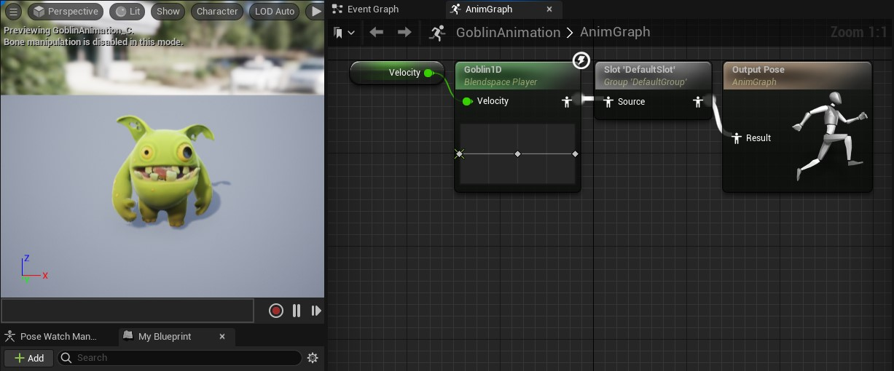
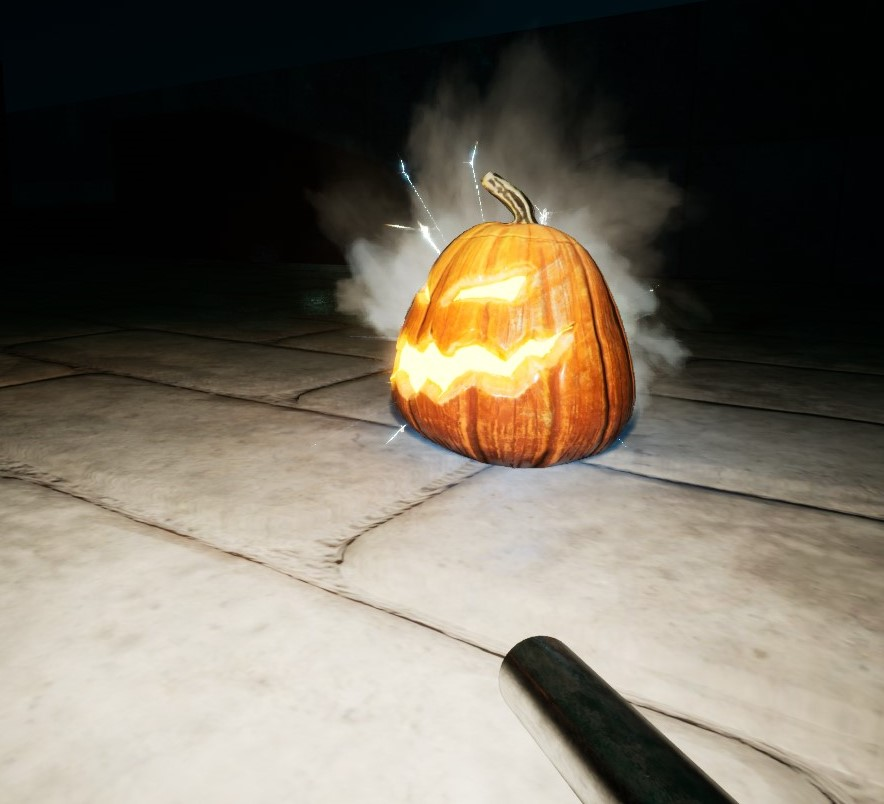
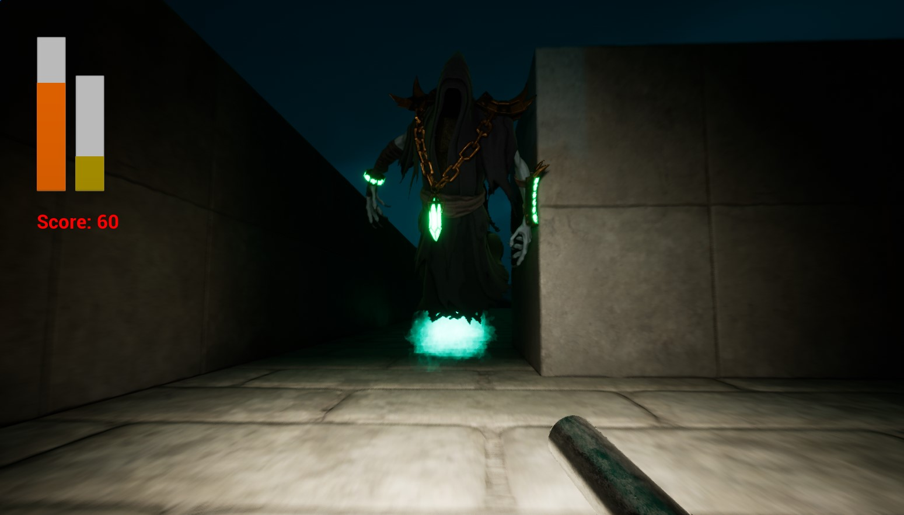
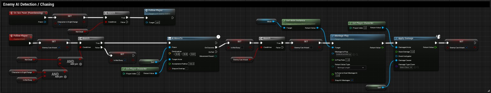
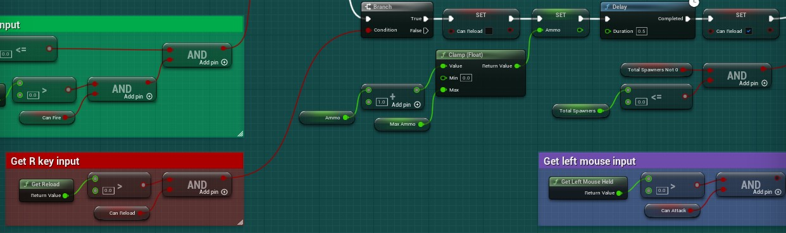

The Lich's Mansion
What is The Lich's Mansion?
The Lich's Mansion is an assignment for my realtime project done in Unreal Engine. It is a Halloween themed first person shooter inspired off of Konami's Castlevania series and an old arcade game called Robotron: 2048; a multidirectional shooter developed by Eugene Jarvis and Larry DeMar in 1982. The story is that a Lich has been terrorizing the people of nearby villages for decades, and you are responsible for defeating it with nothing but a gun and determination.
Pre-Development
I went for a Halloween appeal with seasonal enemies and some main antagonist. Epic Games contained free Halloween content for the season, so I downloaded a starter pack containing five enemy times (goblin, zombie, skeleton, ghoul, and lich) as well as a carved pumpkin kit each containing their own features. The goal was to create a Castlevania experience but in 3D, so design and mesh wise, I was prepared after downloading the content.
Development Phase
 I started by developing the character; I used Unreal's default character blueprint to construct the character which allowed me to move and jump by default, but I also added a sprint feature. I then gave the player a gun that spawned an actor that acted as a projectile to satisfy the need to shoot enemies like in Robotron; on overlap with other game objects or at the end of it's lifetime, the projectile actor would disappear. The health pool for the player was added afterwards, as well as a reload feature; like any health pool, this kept track of whether it was game over or not, and the reload feature was to implement some form of realism... to a non-realistic game. Along side, the pause menu was constructed; The pause menu was created by adding a widget that blurred the screen to the viewport; the mouse also needed to be visible when the game was paused.
 After the player was finished, I moved onto the enemies. I wanted to give the enemies life, so I knew they would need a running, attack, and death animation; luckily, the content downloaded had all of the above. The enemy logic was as follows: check if a player entered their pawn-sensing component, move the enemy towards the player while playing a running animation, and attack the player if the enemy has successfully moved to the player. The spawners were the pumkins I downloaded; after a set amount of time (in seconds), an enemy would pop out of the spawner. Spawning the enemies gave me a lot of trouble; the actors kept spawning under the ground, which was obviously not desired. The issue was fixed after some digging, and I'll explain the problem later in this page.
After constructing the level the player interacts with, it was time to create the Lich. The process was identical to making the goblin and zombie, with the only differences being a higher health pool and more animation montages to give it more of a personality. I programmed it to spawn after the number of spawners reached zero. If the player defeated the Lich, they won the game.
Challenges Faced / Changes Made
No project is done perfectly first try; there were multiple errors and bugs encountered when programming. One I faced was getting the animations right. Animations would end too soon and required a lot of pre-requisites to successfully play the animation.
I conqured this block with multiple booleans and inputs, such as checking if the enemy is currently attacking. If they were, they were set as busy and incapable of chasing the player while in their attack animation was running. To keep their attack animation active, a boolean was set to true or false depending on the situation; if they were attacking, "can attacking" would be set to true; during that time, the attack animation played, and "can attacking" would be set to false and the loop would restart. This created a loop to assure the enemy is currently attacking and if they can attack to play the full animation.
When programming the reload feature, I originally wanted to reload ammunition automatically if the player currently wasn't shooting. This ran into a lot of issues, so I eventually checked if the 'R' key is pressed to reload.
The implementation was similar to the enemy animation system above; I simply needed a boolean that would reset for each iteration while 'R' was held down.
As said before, the spawners gave me some trouble; enemies kept spawning under the spawner / ground. The issue was that the enemy spawned at the spawner's origin point, so I needed to add units to the 'Z' axis. After fixing this, I encountered another issue, that being the enemies weren't moving! It was an easy fix though; the auto process AI outliner component needed to be set to 'Placed In World' for the enemy.
Future Implementations
The project is not finished and I already have began adding new features.
An important feature is the addition of new weapons; I already have a free weapons content package for that very purpose.
Alongside multiple weapon types, various other features will be incorperated such as:
- Two more bosses, that being the Ghoul and Skeleton that were not used in the initial assignment.
- Music and more audio
- Platformer elements
- And more
Download Project
Currently work in progress